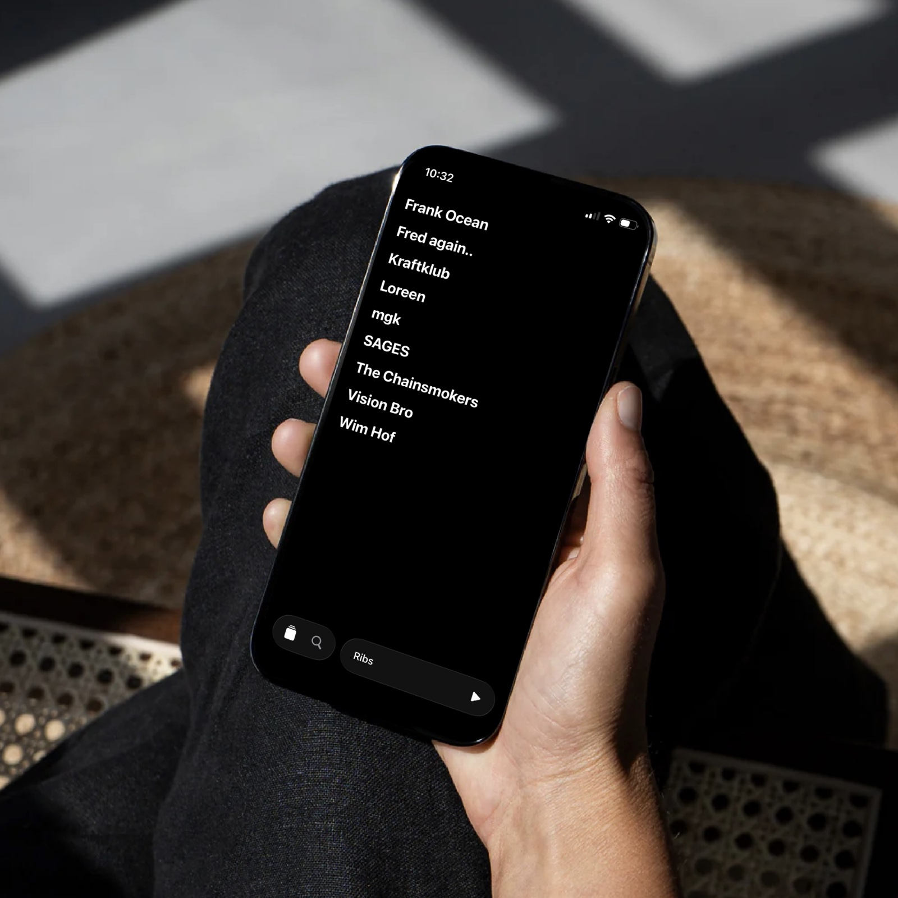

A regular music streaming app.
But just a bit calmer.

OG exists to honor the craft of music. It has every important capability that all other major streaming apps have, but it intentionally cuts back on the sheer amount of interface in people's faces.
The app is currently in a private TestFlight beta.
Testflight Beta